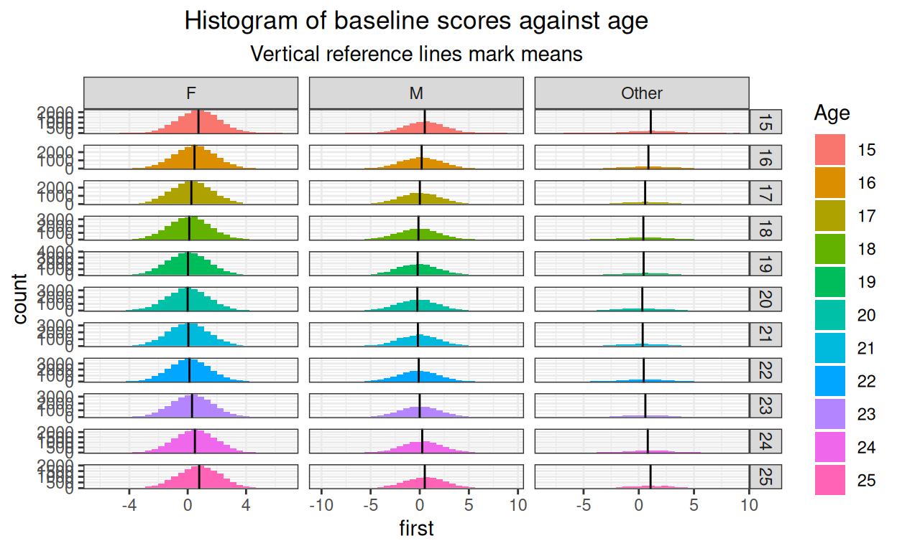
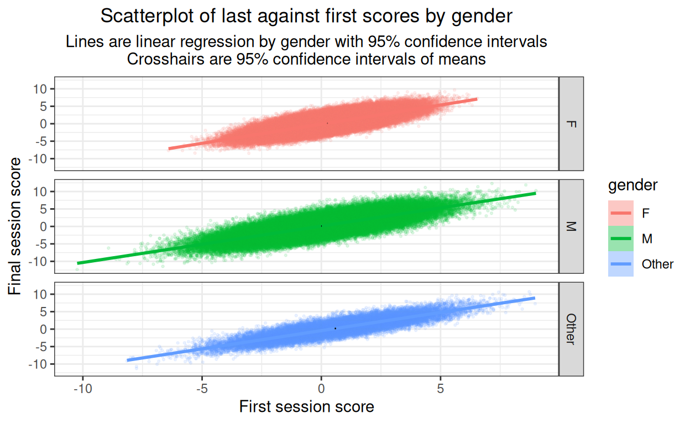

Started 5.ii.22, latest update 12.ii.22, still work in progress but worth mounting to illustrate some of the issues
Background
I was being very slow talking with Emily (Dr. Blackshaw now) about some pre/post analyses she is doing so I realised I should take my ageing brain for some gentle walking pace exercise about pre/post change analyses!
Her dataset is fairly large and has first and last session CORE scores (CORE-10 or YP-CORE, analysing each dataset separately). She has been asked to look at the impacts on change of the numbers of sessions attended, gender and age.
Doing this has been helpful to me in thinking through the challenges of testing for effects of even a very small set of predictor variables on pre/post change scores. I hope it may be useful to others on that level of exploring the issues. I also hope that the code both for the exploratory/descriptive graphics, and the effect testing, will be useful to others.
Plan
This is an emerging document and I think it will spin off some separate posts, its also a large post and at the moment splits into three sections:
Generation of the data. This is really just here to make that process transparent and provide the code but unless you are particularly interested in this sort of thing you can ignore the code and get through this section very fast.
Exploration of the data. With real data I like to see the data and not just get jumped into ANOVA tables. Here I was also doing it to get a visual sense of the effects I had created and to be sure my simulation had worked. With real data this helps see where data doesnt fit the distributional models in the analyses (usually assumptions of Gaussian distributions and linear effects). I have modelled in a quadratic effect, a U-shaped relationship between baseline score and age, but otherwise the data are simulated so are all pretty squeaky clean so skim this too if you want but I encourage you to look at your own data carefully with these sorts of graphics before jumping to modelling.
Testing for the effects. This was what got me into this self-answered reassurance journey. I was hoping that effect plots would be helpful but got into the issue of interactions so this section is really still taking shape.
Generation of the data
This code block generates the baseline scores. Im using Gaussian distributions which is just one of the many unrealistic aspects of this. However, Im really doing this to explore different ways of displaying the effects and not aspiring to verisimilitude!
Show code
### these vectors create population proportions from which to sample with sample()
vecSessions <- c(rep(2, 40), # I have made these up, I have no idea how realistic they are
rep(3, 30),
rep(4, 20),
rep(3, 15),
rep(4, 10),
rep(5, 8),
rep(6, 7),
rep(7, 5),
rep(8, 3),
rep(9, 2),
rep(10, 1))
vecAge <- c(rep(15, 20), # ditto
rep(16, 25),
rep(17, 25),
rep(18, 30),
rep(19, 35),
rep(20, 30),
rep(21, 30),
rep(22, 33),
rep(23, 29),
rep(24, 20),
rep(25, 18))
vecGender <- c(rep("F", 63), # ditto
rep("M", 30),
rep("Other", 7))
nGenders <- length(vecGender)
nAges <- length(15:25) # lazy but does make tweaking the model later easier!
nSessLengths <- length(2:20) # ditto
nCells <- nGenders * nAges * nSessLengths
avCellSize <- 20 # trying to make things big enough
populnSize <- nCells * avCellSize
### build scores from a Gaussian base variable
latentMean <- 0
latentSD <- 1
### add baseline differences
### gender has female as reference vale
effBaseFemaleMean <- 0
effBaseFemaleSD <- 1
effBaseMaleMean <- -.25
effBaseMaleSD <- 1.8
effBaseOtherMean <- .35
effBaseOtherSD <- 2
### model age as a quadratic
minAge <- min(vecAge)
midAge <- mean(vecAge)
effBaseAgeMeanMult <- .03
effBaseAgeSD <- 1
### now create model for change effects
### start with noise to add to baseline score
changeFuzzMean <- .1
changeFuzzSD <- .2
### now gender effects on change
effChangeFemaleMean <- -.8
effChangeFemaleSD <- 1
effChangeMaleMean <- effChangeFemaleMean + .2 # smaller improvement for men
effChangeMaleSD <- 1.5 # more variance in male change
effChangeOtherMean <- effChangeFemaleMean - .3 # better for "other"
effChangeOtherSD <- 1
### model age as a quadratic again
effChangeAgeMeanMult <- .1
effChangeAgeMeanSD <- 1
### model effect of number of sessions as linear
minSessions = min(vecSessions)
effChangeSessionsMult <- -.15
effChangeSessionsSD <- 1
### build the sample
set.seed(12345) # reproducible sample
### get the basics
as_tibble(list(ID = 1:populnSize,
gender = sample(vecGender, populnSize, replace = TRUE),
age = sample(vecAge, populnSize, replace = TRUE),
nSessions = sample(vecSessions, populnSize, replace = TRUE),
### now build baseline scores
baseLatent = rnorm(populnSize, mean = latentMean, sd = latentSD))) -> tibSimulnVars
### now use those to build baseline data
tibSimulnVars %>%
### create effect of gender
mutate(gendEffect = case_when(gender == "F" ~ rnorm(populnSize, mean = effBaseFemaleMean, sd = effBaseFemaleSD),
gender == "M" ~ rnorm(populnSize, mean = effBaseMaleMean, sd = effBaseMaleSD),
gender == "Other" ~ rnorm(populnSize, mean = effBaseOtherMean, sd = effBaseOtherSD)),
### this is just creating factors, useful when plotting
Age = factor(age),
facSessions = factor(nSessions)) %>%
rowwise() %>%
### create effect of age
### I am, a bit unrealistically, assuming that number of sessions doesn't affect baseline score (nor v.v.)
mutate(ageEffect = effBaseAgeMeanMult * rnorm(1,
mean = (age - midAge)^2, # centred quadratic
sd = effBaseAgeSD),
first = baseLatent + gendEffect + ageEffect) %>%
ungroup() -> tibBaselineScores
Now create the change scores to create the final scores. First time around I went straight to create the final scores, easier to follow this way.
Show code
tibBaselineScores %>%
### create basic change scores with noise to add to the baseline scores
mutate(change =rnorm(populnSize,
mean = changeFuzzMean,
sd = changeFuzzSD)) %>%
### now add effect of gender on change
mutate(gendChangeEffect = case_when(gender == "F" ~ rnorm(populnSize,
mean = effChangeFemaleMean,
sd = effChangeFemaleSD),
gender == "M" ~ rnorm(populnSize,
mean = effChangeMaleMean,
sd = effChangeMaleSD),
gender == "Other" ~ rnorm(populnSize,
mean = effChangeOtherMean,
sd = effChangeOtherSD))) %>%
rowwise() %>%
### add effect of age
mutate(ageChangeEffect = effChangeAgeMeanMult * rnorm(1,
mean = (age - midAge)^2,
sd = effChangeAgeMeanSD),
### add effect of number of sessions
sessionChangeEffect = effChangeSessionsMult * rnorm(1,
mean = nSessions - minSessions,
sd = effChangeSessionsSD),
change = change + gendChangeEffect + ageChangeEffect + sessionChangeEffect,
last = first + change) %>%
ungroup() -> tibDat
Ive simulated a very unrealistic dataset of total size 418000 with a three way gender classification and age ranging from 15 to 25 and numbers of sessions from 2 to 10.
Exploration of the data
This was to check my simulation but I think its good practice with any dataset to explore it graphically and thoroughly yourself and ideally to make some of that exploration available to others, some in a main paper or report, some in supplementary materials anyone can get to.
First check the breakdown by the predictor variables: gender, age and number of sessions. With a real world dataset Id check for systematic associations between these variables, e.g.is the age distribution, or the numbers of sessions attended different by gender? Does the number of sessions attended relate to age? However, I built in no non-random associations so I havent done that exploration here.
Gender
Show code

OK.
Age
Show code
ggplot(data = tibDat,
aes(x = age, fill = gender))+
geom_histogram(stat = "count") +
scale_x_continuous(breaks = vecAge, labels = as.character(vecAge))
I havent created any systematic association between age and gender.
Numbers of sessions
Show code
ggplot(data = tibDat,
aes(x = nSessions, fill = gender))+
geom_histogram(stat = "count") +
scale_x_continuous(breaks = vecSessions, labels = as.character(vecSessions))

I havent created any systematic association between number of sessions and gender, nor with age.
Look at distributions of scores and how these relate to predictors
Checking distributions is a bit silly here as we know Ive created samples from Gaussian distributions, however with real world data really marked deviations from Gaussian distributions would clarify that caution would be needed for any tests or confidence intervals when we look at effects on change.
Start with first, i.e.baseline score.
Show code
ggplot(data = tibDat,
aes(x = first)) +
geom_histogram() +
geom_vline(xintercept = mean(tibDat$first),
colour = "blue") +
ggtitle("Histogram of all baseline scores",
subtitle = "Blue vertical reference line marks mean")

I could get fancy and add the best Gaussian distribution fit but clearly no major problem there and could add tests of fit but thats all overkill here so I havent. Now what about the effects of predictors?
Show code
tibDat %>%
group_by(gender) %>%
summarise(mean = mean(first)) -> tmpTibMeans
ggplot(data = tibDat,
aes(x = first, fill = gender)) +
facet_grid(rows = vars(gender),
scales = "free_y") +
geom_histogram() +
geom_vline(data = tmpTibMeans,
aes(xintercept = mean)) +
ggtitle("Histogram of baseline scores against gender",
subtitle = "Vertical reference lines mark means")

We can see the relationship between mean baseline score and gender. I have set the Y axis as free, i.e.can be different in each facet of the plot, as numbers in each gender category vary a lot.
Show code
tibDat %>%
group_by(Age) %>%
summarise(mean = mean(first)) -> tmpTibMeans
ggplot(data = tibDat,
aes(x = first, fill = Age)) +
facet_grid(rows = vars(Age),
scales = "free_y") +
geom_histogram() +
geom_vline(data = tmpTibMeans,
aes(xintercept = mean)) +
ggtitle("Histogram of baseline scores against age",
subtitle = "Vertical reference lines mark means")
Fine! And just to pander to obsessionality heres a facetted histogram by both age and gender.
Show code
tibDat %>%
group_by(Age, gender) %>%
summarise(mean = mean(first)) -> tmpTibMeans
ggplot(data = tibDat,
aes(x = first, fill = Age)) +
facet_grid(rows = vars(Age),
cols = vars(gender),
scales = "free") +
geom_histogram() +
geom_vline(data = tmpTibMeans,
aes(xintercept = mean)) +
ggtitle("Histogram of baseline scores against age",
subtitle = "Vertical reference lines mark means")

Thats just silly! (And its very small here, would be lovely if distill created large plots that would open if the small plot is clicked. I think thats beyond my programming skills.)
Show code
tibDat %>%
group_by(nSessions) %>%
summarise(mean = mean(first)) -> tmpTibMeans
ggplot(data = tibDat,
aes(x = first, fill = nSessions)) +
facet_grid(rows = vars(nSessions),
scales = "free") +
geom_histogram() +
geom_vline(data = tmpTibMeans,
aes(xintercept = mean)) +
ggtitle("Histogram of baseline scores against number of sessions",
subtitle = "Vertical reference lines mark means")
OK. Now same for final scores.
Show code
ggplot(data = tibDat,
aes(x = last)) +
geom_histogram() +
geom_vline(xintercept = mean(tibDat$last),
colour = "blue") +
xlab("Final scores") +
ggtitle("Histogram of all final scores",
subtitle = "Blue vertical reference line marks mean")

OK.
Show code
tibDat %>%
group_by(gender) %>%
summarise(mean = mean(first)) -> tmpTibMeans
ggplot(data = tibDat,
aes(x = first, fill = gender)) +
facet_grid(rows = vars(gender),
scales = "free_y") +
geom_histogram() +
geom_vline(data = tmpTibMeans,
aes(xintercept = mean)) +
ggtitle("Histogram of final scores against gender",
subtitle = "Vertical reference lines mark means")

OK again.
Show code
tibDat %>%
group_by(Age) %>%
summarise(mean = mean(first)) -> tmpTibMeans
ggplot(data = tibDat,
aes(x = first, fill = Age)) +
facet_grid(rows = vars(Age),
scales = "free_y") +
geom_histogram() +
geom_vline(data = tmpTibMeans,
aes(xintercept = mean)) +
ggtitle("Histogram of final scores against age",
subtitle = "Vertical reference lines mark means")

And again.
Show code
tibDat %>%
group_by(Age, gender) %>%
summarise(mean = mean(first)) -> tmpTibMeans
ggplot(data = tibDat,
aes(x = first, fill = Age)) +
facet_grid(rows = vars(Age),
cols = vars(gender),
scales = "free") +
geom_histogram() +
geom_vline(data = tmpTibMeans,
aes(xintercept = mean)) +
ggtitle("Histogram of final scores against age",
subtitle = "Vertical reference lines mark means")

Still silly!
Show code
tibDat %>%
group_by(nSessions) %>%
summarise(mean = mean(first)) -> tmpTibMeans
ggplot(data = tibDat,
aes(x = first, fill = nSessions)) +
facet_grid(rows = vars(nSessions),
scales = "free") +
geom_histogram() +
geom_vline(data = tmpTibMeans,
aes(xintercept = mean)) +
ggtitle("Histogram of final scores against number of sessions",
subtitle = "Vertical reference lines mark means")

Getting lumpy where the cell sizes are getting small of course but fine.
Gender
Show code
### get means and bootstrap CIs for baseline gender effect
set.seed(12345) # reproducible bootstrap
suppressWarnings(tibBaselineScores %>%
group_by(gender) %>%
summarise(mean = mean(first),
CI = list(getBootCImean(first,
nGT10kerr = FALSE,
verbose = FALSE))) %>%
unnest_wider(CI) -> tmpTibMeans)
ggplot(data = tibBaselineScores,
aes(x = gender, y = first)) +
geom_violin(aes(fill = gender),
scale = "count") +
geom_hline(yintercept = mean(tibBaselineScores$first)) +
geom_point(data = tmpTibMeans,
aes(y = mean)) +
geom_linerange(data = tmpTibMeans,
inherit.aes = FALSE,
aes(x = gender,
ymin = LCLmean,
ymax = UCLmean)) +
ylab("Baseline score") +
xlab("Gender") +
ggtitle("Violin plot to check baseline gender differences",
subtitle = "points are means, tiny vertical lines are 95% bootstrap CI of means")

OK. Its not very visible but there is a small baseline gender effect and the confidence intervals are so tight that they are just about invisible.
Age
Show code
### get means and bootstrap CIs for baseline age effect
set.seed(12345) # reproducible bootstrap
suppressWarnings(tibBaselineScores %>%
group_by(Age) %>%
summarise(mean = mean(first),
CI = list(getBootCImean(first,
nGT10kerr = FALSE,
verbose = FALSE))) %>%
unnest_wider(CI) -> tmpTibMeans)
ggplot(data = tibBaselineScores,
aes(x = Age, y = first)) +
geom_violin(aes(fill = Age),
scale = "count") +
geom_hline(yintercept = mean(tibBaselineScores$first)) +
geom_point(data = tmpTibMeans,
aes(y = mean)) +
geom_linerange(data = tmpTibMeans,
inherit.aes = FALSE,
aes(x = Age,
ymin = LCLmean,
ymax = UCLmean)) +
ylab("Baseline score") +
xlab("Age") +
ggtitle("Violin plot to check baseline gender differences",
subtitle = "points are means, tiny vertical lines are 95% bootstrap CI of means")
Small and very unrealistic quadratic (U shaped) effect of age on baseline scores.
Check on change scores Ive created
Show code
tibDat %>%
group_by(gender) %>%
summarise(meanFirst = mean(first),
meanLast = mean(last),
CIfirst = list(getBootCImean(first,
nGT10kerr = FALSE,
verbose = FALSE)),
CIlast = list(getBootCImean(last,
nGT10kerr = FALSE,
verbose = FALSE))) %>%
unnest_wider(CIfirst) %>%
### got to rename to avoid name collision
rename(obsmeanFirst = obsmean,
LCLmeanFirst = LCLmean,
UCLmeanFirst = UCLmean) %>%
unnest_wider(CIlast) %>%
### renaming now is just for clarity rather than necessity
rename(obsmeanLast = obsmean,
LCLmeanLast = LCLmean,
UCLmeanLast = UCLmean) -> tmpTibMeans
ggplot(data = tibDat,
aes(x = first, y = last, colour = gender, fill = gender)) +
geom_point(alpha = .1, size = .5) +
geom_smooth(method = "lm") +
# geom_point(data = tmpTibMeans,
# aes(x = meanFirst, y = meanLast),
# size = 3) +
geom_linerange(data = tmpTibMeans,
inherit.aes = FALSE,
aes(x = meanFirst,
ymin = LCLmeanLast,
ymax = UCLmeanLast)) +
geom_linerange(data = tmpTibMeans,
inherit.aes = FALSE,
aes(y = meanLast,
xmin = LCLmeanFirst,
xmax = UCLmeanFirst)) +
xlab("First session score") +
ylab("Final session score") +
ggtitle("Scatterplot of last against first scores by gender",
subtitle = "Lines are linear regression by gender with 95% confidence intervals\nCrosshairs are 95% confidence intervals of means")
Not a very informative plot here but it would be important with real data to plot something like this to see whether there are markedly non-linear relationships. Here its just about visible that Ive created slight differences in slope of final session score on first session score by gender. Ive put in the means (of first and last scores) by gender which helps remind us of the horizontal shift of the baseline score gender differences seen above. (Cross hairs in black as the ones for the men and for the women disappear if coloured by gender.)
Show code
ggplot(data = tibDat,
aes(x = first, y = last, colour = gender, fill = gender)) +
facet_grid(rows = vars(gender)) +
geom_point(alpha = .1, size = .5) +
geom_smooth(method = "lm") +
# geom_point(data = tmpTibMeans,
# aes(x = meanFirst, y = meanLast),
# size = 3) +
geom_linerange(data = tmpTibMeans,
inherit.aes = FALSE,
aes(x = meanFirst,
ymin = LCLmeanLast,
ymax = UCLmeanLast)) +
geom_linerange(data = tmpTibMeans,
inherit.aes = FALSE,
aes(y = meanLast,
xmin = LCLmeanFirst,
xmax = UCLmeanFirst)) +
xlab("First session score") +
ylab("Final session score") +
ggtitle("Scatterplot of last against first scores by gender",
subtitle = "Lines are linear regression by gender with 95% confidence intervals\nCrosshairs are 95% confidence intervals of means")

As the main objective here is to look for major problems with the relationship between x and y variables, best to complement that with the same but facetted by gender.
OK, no issues of non-linearities there (of course theyre not, I didnt model them so!)
What about change scores themselves?
Plotting final scores against baseline is vital to look for non-linearities in the relationship but we are as interested in change as final scores. (Actually, were interested in both and of course theyre mathematically completely linearly related but the give usefully different views on this whole issue of final score and change.)
So plot change against first score now we have seen that the relationships between first and last scores are not markedly non-linear.
Show code
tibDat %>%
group_by(gender) %>%
summarise(meanFirst = mean(first),
meanChange = mean(change),
CIfirst = list(getBootCImean(first,
nGT10kerr = FALSE,
verbose = FALSE)),
CIchange = list(getBootCImean(change,
nGT10kerr = FALSE,
verbose = FALSE))) %>%
unnest_wider(CIfirst) %>%
### got to rename to avoid name collision
rename(obsmeanFirst = obsmean,
LCLmeanFirst = LCLmean,
UCLmeanFirst = UCLmean) %>%
unnest_wider(CIchange) %>%
### renaming now is just for clarity rather than necessity
rename(obsmeanChange = obsmean,
LCLmeanChange = LCLmean,
UCLmeanChange = UCLmean) -> tmpTibMeans
ggplot(data = tibDat,
aes(x = first, y = change, colour = gender, fill = gender)) +
geom_point(alpha = .1, size = .5) +
geom_smooth(method = "lm") +
geom_point(data = tmpTibMeans,
aes(x = meanFirst, y = meanChange),
size = 3) +
geom_linerange(data = tmpTibMeans,
inherit.aes = FALSE,
aes(x = meanFirst,
ymin = LCLmeanChange,
ymax = UCLmeanChange)) +
geom_linerange(data = tmpTibMeans,
inherit.aes = FALSE,
aes(y = meanChange,
xmin = LCLmeanFirst,
xmax = UCLmeanFirst)) +
xlab("First session score") +
ylab("Final session score") +
ggtitle("Scatterplot of change (last - first) against first scores by gender",
subtitle = "Lines are linear regression by gender with 95% confidence intervals")

Now the mean points show clearly both the horizontal shifts of baseline score gender differences, but also that the change scores are different. The CIs for the female subset are so tiny they disappear but its clear that the differences are systematic for the change scores as well as for the baseline scores. Very slight but clear linear relationship between baseline score and change, in real life datasets Id expect more of a relationship and thatd be an important reason for doing this plot.
Age
Show code
ggplot(data = tibDat,
aes(x = first, y = last, colour = Age, fill = Age)) +
geom_point(alpha = .1, size = .5) +
geom_smooth(method = "lm") +
xlab("First session score") +
ylab("Final session score") +
ggtitle("Scatterplot of last against first scores by age",
subtitle = "Lines are linear regression by age with 95% confidence intervals")

Strong relationships and no obvious non-linearities but not an easy plot to read. Facetted plot better.
Show code
tibDat %>%
mutate(xmean = mean(first)) %>% # centre on x axis
group_by(Age) %>%
summarise(xmean = first(xmean), # to retain that constant
last = mean(last)) -> tmpTibMeans
ggplot(data = tibDat,
aes(x = first, y = last, colour = Age, fill = Age)) +
facet_grid(rows = vars(Age)) +
geom_point(alpha = .3, size = .5) +
geom_smooth(method = "lm") +
geom_hline(yintercept = mean(tibDat$first)) +
geom_point(data = tmpTibMeans,
inherit.aes = FALSE,
aes(x = xmean, y = last)) +
xlab("First session score") +
ylab("Final session score") +
ggtitle("Scatterplot of last against first scores by age",
subtitle = "Lines are linear regression by age with 95% confidence intervals\nBlack reference lines are overall mean final score, points are mean by age.")

Main thing here is that there are no obvious nonlinearities. I have added the overall mean as a horizontal reference and the facet (age) mean as a point so we can still see that the final score mean is related to age.
Now change scores.
Show code
ggplot(data = tibDat,
aes(x = first, y = change, colour = Age, fill = Age)) +
geom_point(alpha = .1, size = .5) +
geom_smooth(method = "lm") +
xlab("First session score") +
ylab("Final session score") +
ggtitle("Scatterplot of change (last - first) against first scores by age",
subtitle = "Lines are linear regression by age with 95% confidence intervals")

@@@ put facetted plot here later, when I have time! @@@
Show code
ggplot(data = tibDat,
aes(x = first, y = last, colour = facSessions, fill = facSessions)) +
geom_point(alpha = .1, size = .5) +
geom_smooth(method = "lm") +
xlab("First session score") +
ylab("Final session score") +
ggtitle("Scatterplot of last against first scores by n(sessions)",
subtitle = "Lines are linear regression by n(sessions) with 95% confidence intervals")

@@@ put facetted plot here later, when I have time! @@@
Show code
ggplot(data = tibDat,
aes(x = first, y = change, colour = facSessions, fill = facSessions)) +
geom_point(alpha = .1, size = .5) +
geom_smooth(method = "lm") +
xlab("First session score") +
ylab("Final session score") +
ggtitle("Scatterplot of change (last - first) against first scores by n(sessions)",
subtitle = "Lines are linear regression by n(sessions) with 95% confidence intervals")
@@@ put facetted plot here later, when I have time! @@@
Show code
### get means and bootstrap CIs for effect of n(sessions) on last score
set.seed(12345) # reproducible bootstrap
suppressWarnings(tibDat %>%
group_by(nSessions) %>%
summarise(mean = mean(change),
CI = list(getBootCImean(change,
nGT10kerr = FALSE,
verbose = FALSE))) %>%
unnest_wider(CI) -> tmpTibMeans)
ggplot(data = tibDat,
aes(x = nSessions, y = change, colour = facSessions, fill = facSessions)) +
geom_violin(scale = "count") +
geom_point(data = tmpTibMeans,
inherit.aes = FALSE,
aes(x = nSessions, y = mean)) +
geom_linerange(data = tmpTibMeans,
inherit.aes = FALSE,
aes(x = nSessions, ymin = LCLmean, ymax = UCLmean),
size = 1) +
geom_smooth(inherit.aes = FALSE,
aes(x = nSessions, y = change),
method = "lm",
colour = "black") +
xlab("Number of sessions") +
ylab("Score change") +
ggtitle("Violin plot of change (last - first) against first scores by n(sessions)",
subtitle = "Line is linear regression with 95% confidence interval\nPoints are means with vertical lines for their bootstrap 95% confidence intervals")
Show code
ggsave("prepost1.png")
Testing for the effects
Start with linear regression of final score on baseline score with all predictors and interactions. Age as factor.
Show code
Call:
lm(formula = last ~ first + gender + Age + nSessions + gender *
Age + gender * nSessions + gender * Age + Age * nSessions +
gender * Age * nSessions, data = tibDat)
Residuals:
Min 1Q Median 3Q Max
-5.9992 -0.7800 -0.0006 0.7767 7.3645
Coefficients:
Estimate Std. Error t value Pr(>|t|)
(Intercept) 1.998892 0.021443 93.217 < 2e-16 ***
first 0.997563 0.001098 908.861 < 2e-16 ***
genderM 0.275614 0.037636 7.323 2.43e-13 ***
genderOther -0.256914 0.065032 -3.951 7.80e-05 ***
Age16 -0.843495 0.028766 -29.323 < 2e-16 ***
Age17 -1.535725 0.028707 -53.497 < 2e-16 ***
Age18 -2.033553 0.027532 -73.862 < 2e-16 ***
Age19 -2.298519 0.026781 -85.828 < 2e-16 ***
Age20 -2.417854 0.027672 -87.375 < 2e-16 ***
Age21 -2.268483 0.027520 -82.431 < 2e-16 ***
Age22 -1.980524 0.027107 -73.063 < 2e-16 ***
Age23 -1.453611 0.027717 -52.445 < 2e-16 ***
Age24 -0.751826 0.030279 -24.830 < 2e-16 ***
Age25 0.167747 0.030820 5.443 5.25e-08 ***
nSessions -0.138232 0.005449 -25.369 < 2e-16 ***
genderM:Age16 -0.057543 0.050395 -1.142 0.25353
genderOther:Age16 -0.048794 0.088211 -0.553 0.58016
genderM:Age17 -0.095745 0.050319 -1.903 0.05707 .
genderOther:Age17 -0.069093 0.088763 -0.778 0.43634
genderM:Age18 -0.096002 0.048294 -1.988 0.04683 *
genderOther:Age18 -0.062146 0.084629 -0.734 0.46274
genderM:Age19 -0.089492 0.047165 -1.897 0.05777 .
genderOther:Age19 -0.050296 0.082522 -0.609 0.54220
genderM:Age20 -0.045583 0.048587 -0.938 0.34815
genderOther:Age20 -0.021258 0.085097 -0.250 0.80274
genderM:Age21 -0.121299 0.048397 -2.506 0.01220 *
genderOther:Age21 -0.130454 0.085207 -1.531 0.12577
genderM:Age22 -0.144666 0.047561 -3.042 0.00235 **
genderOther:Age22 -0.029070 0.083188 -0.349 0.72675
genderM:Age23 -0.090242 0.048788 -1.850 0.06436 .
genderOther:Age23 -0.044951 0.085015 -0.529 0.59699
genderM:Age24 -0.056617 0.052857 -1.071 0.28411
genderOther:Age24 -0.094066 0.093598 -1.005 0.31490
genderM:Age25 -0.098099 0.054572 -1.798 0.07224 .
genderOther:Age25 -0.208275 0.095924 -2.171 0.02991 *
genderM:nSessions -0.014893 0.009499 -1.568 0.11693
genderOther:nSessions -0.015892 0.016102 -0.987 0.32367
Age16:nSessions -0.011043 0.007308 -1.511 0.13076
Age17:nSessions -0.015418 0.007298 -2.113 0.03463 *
Age18:nSessions -0.007741 0.006985 -1.108 0.26778
Age19:nSessions -0.013239 0.006790 -1.950 0.05120 .
Age20:nSessions -0.008232 0.007035 -1.170 0.24194
Age21:nSessions -0.015335 0.006980 -2.197 0.02801 *
Age22:nSessions -0.008215 0.006883 -1.193 0.23271
Age23:nSessions -0.012965 0.007048 -1.839 0.06585 .
Age24:nSessions -0.012906 0.007693 -1.678 0.09341 .
Age25:nSessions -0.011482 0.007812 -1.470 0.14162
genderM:Age16:nSessions 0.010376 0.012757 0.813 0.41600
genderOther:Age16:nSessions 0.016470 0.022154 0.743 0.45724
genderM:Age17:nSessions 0.022974 0.012738 1.804 0.07129 .
genderOther:Age17:nSessions 0.029906 0.022300 1.341 0.17989
genderM:Age18:nSessions 0.017580 0.012198 1.441 0.14954
genderOther:Age18:nSessions 0.015737 0.021265 0.740 0.45927
genderM:Age19:nSessions 0.016186 0.011926 1.357 0.17470
genderOther:Age19:nSessions 0.012372 0.020598 0.601 0.54807
genderM:Age20:nSessions 0.009190 0.012317 0.746 0.45563
genderOther:Age20:nSessions 0.008813 0.021323 0.413 0.67939
genderM:Age21:nSessions 0.029381 0.012220 2.404 0.01620 *
genderOther:Age21:nSessions 0.036737 0.021375 1.719 0.08567 .
genderM:Age22:nSessions 0.033377 0.012006 2.780 0.00543 **
genderOther:Age22:nSessions 0.007113 0.020690 0.344 0.73100
genderM:Age23:nSessions 0.020473 0.012334 1.660 0.09695 .
genderOther:Age23:nSessions 0.020048 0.021269 0.943 0.34590
genderM:Age24:nSessions 0.012999 0.013351 0.974 0.33025
genderOther:Age24:nSessions 0.026838 0.023344 1.150 0.25027
genderM:Age25:nSessions 0.021564 0.013813 1.561 0.11851
genderOther:Age25:nSessions 0.046793 0.023952 1.954 0.05075 .
---
Signif. codes: 0 '***' 0.001 '**' 0.01 '*' 0.05 '.' 0.1 ' ' 1
Residual standard error: 1.203 on 417933 degrees of freedom
Multiple R-squared: 0.7375, Adjusted R-squared: 0.7375
F-statistic: 1.779e+04 on 66 and 417933 DF, p-value: < 2.2e-16Show code
# lisLMFull$coefficients %>%
# as_tibble() %>% # that ignores the names so ...
# mutate(effect = names(lisLMFull$coefficients)) %>% # get them!
# select(effect, value) %>% # more sensible order
# rename(coefficient = value )
### hm, that's done for me in broom
broom::tidy(lisLMFull) %>%
### identify the order of the terms, i.e. two-way interaction has order 2 etc.
mutate(order = 1 + str_count(term, fixed(":")),
sig = if_else(p.value < .05, 1, 0)) -> tibLMFull
valNinteractions <- sum(tibLMFull$order > 1)
Thats not very digestible but it is, arguably, a sensible place to start. We can ignore the intercept really but its not zero!
More usefully, we have a very strong effect of initial score on final score, a statistically significant effect of male gender against the reference gender (female) and no statistically significant effect of gender other in this saturated model. The reference category for age is the lowest, age 15 and all the other ages show a statistically significantly different final score from that for age 15 except age 25. Finally, in the simple effects, we have a statistically significant effect of number of sessions on final score with coefficient estimate -0.138, i.e.a drop of about that in mean final score for every one more session attended. (Remember the final scores here distribute between -12.34 and 12.31 with SD 2.35 so I appear to have modelled in a pretty small effect of nSessions.
The complication is all those statistically significant interactions in this saturated model. We have 67 terms, including the intercept, 14 simple effects (ignoring the intercept) and 52 interactions, 32 two-way interactions and 20 three-way interactions. Heres the breakdown of the numbers significant.
Show code
| order | n | nSignif | propn |
|---|---|---|---|
| 1 | 15 | 15 | 1 |
| 2 | 32 | 6 | 0.188 |
| 3 | 20 | 2 | 0.1 |
With 52 the probability that none of them would come out statistically significant at p < .05 given a true null population model would be .95^52, i.e.0.069, pretty unlikely but the challenge is to know what to do about this. If we could treat age as linear we wouldnt have all those effects for each age other than 15 and things would be much simpler, but we know Ive modelled age as having a quadratic effect.
Cheat a bit and just fit the quadratic for age by centring and then squaring age.
Show code
# lm(last ~ first + gender + poly(Age, 2) + nSessions +
# gender * poly(Age, 2) + gender * nSessions + gender * poly(Age, 2) + poly(Age, 2) * nSessions +
# gender * poly(Age, 2) * nSessions,
# data = tibDat) -> lisLMAge2
centreVec <- function(x){
x - mean(x)
}
tibDat %>%
mutate(ageSquared = centreVec(age),
ageSquared = ageSquared^2,
### recentre to get mean zero
ageSquared = centreVec(ageSquared)) -> tibDat
lm(last ~ first + gender + ageSquared + nSessions +
gender * ageSquared + gender * nSessions + gender * ageSquared + ageSquared * nSessions +
gender * ageSquared * nSessions,
data = tibDat) -> lisLMAge2
summary(lisLMAge2)
Call:
lm(formula = last ~ first + gender + ageSquared + nSessions +
gender * ageSquared + gender * nSessions + gender * ageSquared +
ageSquared * nSessions + gender * ageSquared * nSessions,
data = tibDat)
Residuals:
Min 1Q Median 3Q Max
-5.9852 -0.7795 -0.0006 0.7767 7.3727
Coefficients:
Estimate Std. Error t value
(Intercept) 0.4355888 0.0055454 78.549
first 0.9975685 0.0010975 908.949
genderM 0.1900903 0.0097396 19.517
genderOther -0.3206512 0.0173832 -18.446
ageSquared 0.0994679 0.0006739 147.600
nSessions -0.1490117 0.0014044 -106.106
genderM:ageSquared 0.0021081 0.0011869 1.776
genderOther:ageSquared -0.0014332 0.0021039 -0.681
genderM:nSessions 0.0035952 0.0024671 1.457
genderOther:nSessions 0.0029519 0.0044030 0.670
ageSquared:nSessions 0.0001480 0.0001706 0.867
genderM:ageSquared:nSessions -0.0004417 0.0003007 -1.469
genderOther:ageSquared:nSessions 0.0002704 0.0005293 0.511
Pr(>|t|)
(Intercept) <2e-16 ***
first <2e-16 ***
genderM <2e-16 ***
genderOther <2e-16 ***
ageSquared <2e-16 ***
nSessions <2e-16 ***
genderM:ageSquared 0.0757 .
genderOther:ageSquared 0.4958
genderM:nSessions 0.1450
genderOther:nSessions 0.5026
ageSquared:nSessions 0.3857
genderM:ageSquared:nSessions 0.1418
genderOther:ageSquared:nSessions 0.6095
---
Signif. codes: 0 '***' 0.001 '**' 0.01 '*' 0.05 '.' 0.1 ' ' 1
Residual standard error: 1.203 on 417987 degrees of freedom
Multiple R-squared: 0.7375, Adjusted R-squared: 0.7375
F-statistic: 9.786e+04 on 12 and 417987 DF, p-value: < 2.2e-16Hm, better but no cigar!
Start over from simplest model and build up
Baseline of regression model.
Call:
lm(formula = last ~ first, data = tibDat)
Residuals:
Min 1Q Median 3Q Max
-6.6682 -1.0108 -0.0606 0.9579 7.5304
Coefficients:
Estimate Std. Error t value Pr(>|t|)
(Intercept) -0.070443 0.002304 -30.57 <2e-16 ***
first 1.059520 0.001331 796.23 <2e-16 ***
---
Signif. codes: 0 '***' 0.001 '**' 0.01 '*' 0.05 '.' 0.1 ' ' 1
Residual standard error: 1.48 on 417998 degrees of freedom
Multiple R-squared: 0.6027, Adjusted R-squared: 0.6027
F-statistic: 6.34e+05 on 1 and 417998 DF, p-value: < 2.2e-16Of course, highly significant.
Start by adding nSessions.
Call:
lm(formula = last ~ first + nSessions, data = tibDat)
Residuals:
Min 1Q Median 3Q Max
-6.6054 -0.9964 -0.0671 0.9413 7.7406
Coefficients:
Estimate Std. Error t value Pr(>|t|)
(Intercept) 0.456206 0.005332 85.55 <2e-16 ***
first 1.059541 0.001312 807.51 <2e-16 ***
nSessions -0.147375 0.001350 -109.17 <2e-16 ***
---
Signif. codes: 0 '***' 0.001 '**' 0.01 '*' 0.05 '.' 0.1 ' ' 1
Residual standard error: 1.459 on 417997 degrees of freedom
Multiple R-squared: 0.6137, Adjusted R-squared: 0.6137
F-statistic: 3.32e+05 on 2 and 417997 DF, p-value: < 2.2e-16Show code
anova(lisLM1, lisLMsessions)
Analysis of Variance Table
Model 1: last ~ first
Model 2: last ~ first + nSessions
Res.Df RSS Df Sum of Sq F Pr(>F)
1 417998 915044
2 417997 889678 1 25366 11918 < 2.2e-16 ***
---
Signif. codes: 0 '***' 0.001 '**' 0.01 '*' 0.05 '.' 0.1 ' ' 1Marked effect, add gender.
Show code
Call:
lm(formula = last ~ first + nSessions + gender + first * gender +
nSessions * gender, data = tibDat)
Residuals:
Min 1Q Median 3Q Max
-6.7645 -0.9796 -0.0548 0.9426 7.5640
Coefficients:
Estimate Std. Error t value Pr(>|t|)
(Intercept) 0.412336 0.006702 61.524 <2e-16 ***
first 1.097156 0.001968 557.374 <2e-16 ***
nSessions -0.149574 0.001695 -88.260 <2e-16 ***
genderM 0.209051 0.011759 17.778 <2e-16 ***
genderOther -0.340363 0.021093 -16.136 <2e-16 ***
first:genderM -0.054331 0.002792 -19.461 <2e-16 ***
first:genderOther -0.053663 0.004284 -12.528 <2e-16 ***
nSessions:genderM 0.005255 0.002977 1.765 0.0776 .
nSessions:genderOther 0.008217 0.005312 1.547 0.1219
---
Signif. codes: 0 '***' 0.001 '**' 0.01 '*' 0.05 '.' 0.1 ' ' 1
Residual standard error: 1.451 on 417991 degrees of freedom
Multiple R-squared: 0.6177, Adjusted R-squared: 0.6177
F-statistic: 8.443e+04 on 8 and 417991 DF, p-value: < 2.2e-16Show code
anova(lisLMsessions, lisLMsessionsGend)
Analysis of Variance Table
Model 1: last ~ first + nSessions
Model 2: last ~ first + nSessions + gender + first * gender + nSessions *
gender
Res.Df RSS Df Sum of Sq F Pr(>F)
1 417997 889678
2 417991 880304 6 9374 741.84 < 2.2e-16 ***
---
Signif. codes: 0 '***' 0.001 '**' 0.01 '*' 0.05 '.' 0.1 ' ' 1Highly significant effect of session count remains but odd effects of gender and an interaction!
Show code
Call:
lm(formula = last ~ first * nSessions * gender * age, data = tibDat)
Residuals:
Min 1Q Median 3Q Max
-6.7660 -0.9798 -0.0545 0.9428 7.5527
Coefficients:
Estimate Std. Error t value
(Intercept) 3.774e-01 4.933e-02 7.650
first 1.093e+00 3.225e-02 33.906
nSessions -1.436e-01 1.252e-02 -11.466
genderM 2.416e-01 8.381e-02 2.883
genderOther -2.194e-01 1.547e-01 -1.418
age 1.818e-03 2.448e-03 0.743
first:nSessions -1.848e-03 8.174e-03 -0.226
first:genderM -5.082e-02 4.585e-02 -1.108
first:genderOther -5.180e-02 6.938e-02 -0.747
nSessions:genderM -9.518e-03 2.124e-02 -0.448
nSessions:genderOther -2.571e-02 3.898e-02 -0.660
first:age -6.619e-05 1.597e-03 -0.041
nSessions:age -3.190e-04 6.213e-04 -0.514
genderM:age -1.697e-03 4.159e-03 -0.408
genderOther:age -6.040e-03 7.680e-03 -0.786
first:nSessions:genderM 1.961e-03 1.163e-02 0.169
first:nSessions:genderOther 3.718e-03 1.726e-02 0.215
first:nSessions:age 1.649e-04 4.048e-04 0.407
first:genderM:age 2.636e-04 2.274e-03 0.116
first:genderOther:age 6.470e-06 3.453e-03 0.002
nSessions:genderM:age 7.593e-04 1.054e-03 0.721
nSessions:genderOther:age 1.694e-03 1.934e-03 0.876
first:nSessions:genderM:age -2.211e-04 5.767e-04 -0.383
first:nSessions:genderOther:age -2.149e-04 8.590e-04 -0.250
Pr(>|t|)
(Intercept) 2.02e-14 ***
first < 2e-16 ***
nSessions < 2e-16 ***
genderM 0.00394 **
genderOther 0.15616
age 0.45777
first:nSessions 0.82114
first:genderM 0.26767
first:genderOther 0.45530
nSessions:genderM 0.65401
nSessions:genderOther 0.50957
first:age 0.96694
nSessions:age 0.60758
genderM:age 0.68325
genderOther:age 0.43160
first:nSessions:genderM 0.86613
first:nSessions:genderOther 0.82942
first:nSessions:age 0.68369
first:genderM:age 0.90772
first:genderOther:age 0.99851
nSessions:genderM:age 0.47120
nSessions:genderOther:age 0.38117
first:nSessions:genderM:age 0.70141
first:nSessions:genderOther:age 0.80247
---
Signif. codes: 0 '***' 0.001 '**' 0.01 '*' 0.05 '.' 0.1 ' ' 1
Residual standard error: 1.451 on 417976 degrees of freedom
Multiple R-squared: 0.6177, Adjusted R-squared: 0.6177
F-statistic: 2.937e+04 on 23 and 417976 DF, p-value: < 2.2e-16Show code
anova(lisLM1, lisLMAge)
Analysis of Variance Table
Model 1: last ~ first
Model 2: last ~ first * nSessions * gender * age
Res.Df RSS Df Sum of Sq F Pr(>F)
1 417998 915044
2 417976 880290 22 34754 750.09 < 2.2e-16 ***
---
Signif. codes: 0 '***' 0.001 '**' 0.01 '*' 0.05 '.' 0.1 ' ' 1No effect of age as its got a quadratic effect in my model!
Show code
Call:
lm(formula = last ~ first + gender + ageSquared + nSessions +
gender * ageSquared + gender * nSessions + gender * ageSquared +
ageSquared * nSessions + gender * ageSquared * nSessions,
data = tibDat)
Residuals:
Min 1Q Median 3Q Max
-5.9852 -0.7795 -0.0006 0.7767 7.3727
Coefficients:
Estimate Std. Error t value
(Intercept) 0.4355888 0.0055454 78.549
first 0.9975685 0.0010975 908.949
genderM 0.1900903 0.0097396 19.517
genderOther -0.3206512 0.0173832 -18.446
ageSquared 0.0994679 0.0006739 147.600
nSessions -0.1490117 0.0014044 -106.106
genderM:ageSquared 0.0021081 0.0011869 1.776
genderOther:ageSquared -0.0014332 0.0021039 -0.681
genderM:nSessions 0.0035952 0.0024671 1.457
genderOther:nSessions 0.0029519 0.0044030 0.670
ageSquared:nSessions 0.0001480 0.0001706 0.867
genderM:ageSquared:nSessions -0.0004417 0.0003007 -1.469
genderOther:ageSquared:nSessions 0.0002704 0.0005293 0.511
Pr(>|t|)
(Intercept) <2e-16 ***
first <2e-16 ***
genderM <2e-16 ***
genderOther <2e-16 ***
ageSquared <2e-16 ***
nSessions <2e-16 ***
genderM:ageSquared 0.0757 .
genderOther:ageSquared 0.4958
genderM:nSessions 0.1450
genderOther:nSessions 0.5026
ageSquared:nSessions 0.3857
genderM:ageSquared:nSessions 0.1418
genderOther:ageSquared:nSessions 0.6095
---
Signif. codes: 0 '***' 0.001 '**' 0.01 '*' 0.05 '.' 0.1 ' ' 1
Residual standard error: 1.203 on 417987 degrees of freedom
Multiple R-squared: 0.7375, Adjusted R-squared: 0.7375
F-statistic: 9.786e+04 on 12 and 417987 DF, p-value: < 2.2e-16Show code
anova(lisLM1, lisLMAge2)
Analysis of Variance Table
Model 1: last ~ first
Model 2: last ~ first + gender + ageSquared + nSessions + gender * ageSquared +
gender * nSessions + gender * ageSquared + ageSquared * nSessions +
gender * ageSquared * nSessions
Res.Df RSS Df Sum of Sq F Pr(>F)
1 417998 915044
2 417987 604514 11 310531 19519 < 2.2e-16 ***
---
Signif. codes: 0 '***' 0.001 '**' 0.01 '*' 0.05 '.' 0.1 ' ' 1Show code
jtools::effect_plot(lisLMAge2, pred = ageSquared, interval = TRUE, rug = TRUE)

Ive added an effect plot with rugs for the y and x variables. Shows clear quadratic effect of age (looks linear because were plotting against squared age).
Basically, this is a surprisingly real world mess! I will stop here as I want to check my hunch that Ive created these (as I say, very real world) interactions by the way I created the final scores using a multiplier rather than a simple addition. However, this does demonstrate the complexities of disentangline effects with even a few predictors particularly when gender is treated not as binary and when age cannot be treated as a linear variable as it clearly has a quadratic effect.